تأمین غذای پرسنل و وعدههای سازمانی
قزوین تصویر با تجربه در تأمین نیازهای صنایع، آماده انعقاد قرارداد تأمین وعدههای غذایی برای پرسنل کارخانهها و شرکتهای شماست. غذای گرم، بهداشتی و باکیفیت را در محل شما توزیع میکنیم.
- حداقل ۵۰ پرس در هر وعده
- صبحانه، ناهار، شام و میانوعده
- توزیع گرم در رستوران یا محل تعیینشده شما

- ۵۰+ حداقل پرس در هر وعده
- ۴ وعده: صبحانه تا شام
- ۷ روز منوی چرخشی هفتگی
- ۲ ساعت زمان پاسخ به درخواست
چرا کارخانهها تأمین غذا را به قزوین تصویر میسپارند؟
ساختاری شفاف، منوی متنوع و اجرای دقیق استانداردهای بهداشتی؛ از نخستین تماس تا توزیع روزانه در شیفتهای شما
-
قرارداد بلندمدت و انعطافپذیر
امکان تنظیم قرارداد یکساله با قابلیت تغییر تعداد پرسها، افزودن وعده جدید یا تعلیق موقت بر اساس برنامه تولید و شیفتهای شما.
-
منوی متنوع و هفتگی
صبحانه، ناهار، شام و میانوعده با منوی هفتگی؛ همراه با منوی فصلی، گزینههای گیاهی و امکان سفارش غذای رژیمی برای پرسنل خاص.
-
توزیع در محل
تحویل غذا در رستوران کارخانه یا محل تعیینشده شما؛ با خودروهای کیترینگ مجهز، بستهبندی گرم و زمانبندی دقیق مطابق ساعات شیفت.
-
استانداردهای بهداشتی
طبخ در آشپزخانههای مجاز و تحت نظارت، نمونهبرداری و کنترل کیفی، بستهبندی بهداشتی و حمل با خودروهای کیترینگ استاندارد.
از درخواست اولیه تا شروع توزیع، در ۵ گام
مسیری شفاف و زمانبندیشده؛ کل فرآیند معمولاً در کمتر از ۱۰ روز کاری نهایی میشود
-
درخواست اولیه
ثبت درخواست از طریق فرم، تلفن یا واتساپ و دریافت اطلاعات پایه: تعداد پرس، وعدههای موردنیاز و محل توزیع.
-
بازدید و ارزیابی
بازدید کارشناس از محل توزیع، بررسی امکانات گرمنگهداری، تعداد شیفتها و برآورد دقیق ظرفیت سرو روزانه.
-
ارائه پیشنهاد و منو
ارائه پیشنهاد قیمت شفاف، منوی هفتگی نمونه و برنامه توزیع؛ همراه با امکان تغییر آیتمها بر اساس سلیقه پرسنل شما.
-
انعقاد قرارداد
تنظیم و امضای قرارداد رسمی با تعیین تعهدات دو طرف، شرایط تسویه، سهمیه پرس روزانه و ضمانت کیفیت خدمات.
-
شروع توزیع
آغاز طبخ و توزیع روزانه در ساعت توافقشده، با نظارت مستمر کیفی، گزارشهای دورهای و پشتیبانی اختصاصی قرارداد.
منوی پیشنهادی وعدههای سازمانی
منوی هفتگی چرخشی با غذاهای ایرانی و بینالمللی؛ قابل تنظیم بر اساس بودجه، سلیقه پرسنل و شرایط تولید شما


-
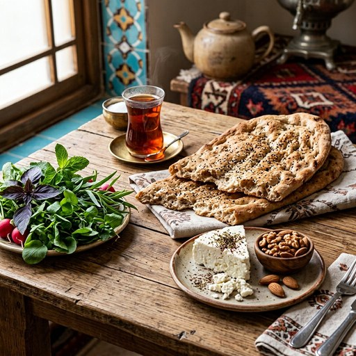
نان سنگک، پنیر لیقوان و گردو
نان سنگک تازه، پنیر لیقوان، گردو، سبزی خوردن و یک لیوان چای پررنگ.
-
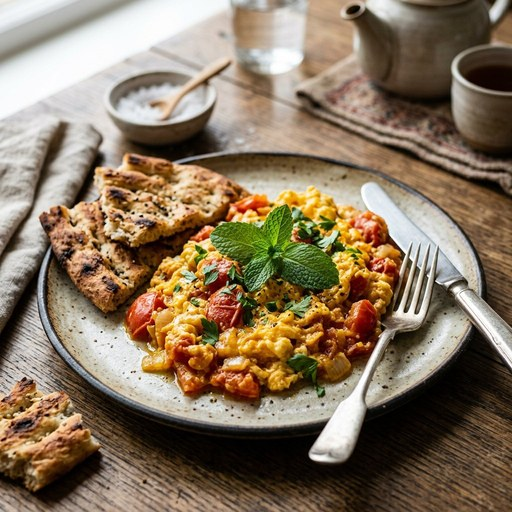
املت گوجهفرنگی با تخممرغ محلی
املت گرم با تخممرغ تازه، گوجهفرنگی و ادویه ملایم، سرو با نان تست.
-
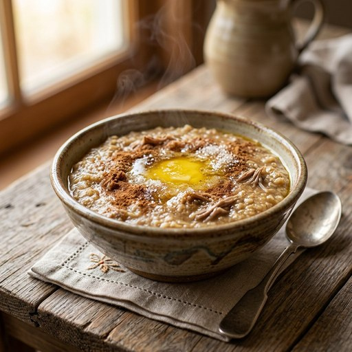
حلیم گندم با دارچین
حلیم گرم و لعابدار پختهشده در آشپزخانه مرکزی، همراه با دارچین، شکر و نان تازه.
-
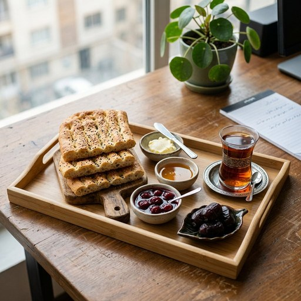
صبحانه سبک کارمندی
کیک تازه، شیرینی خشک، پنیر بستهبندیشده و نوشیدنی گرم یا سرد.

-
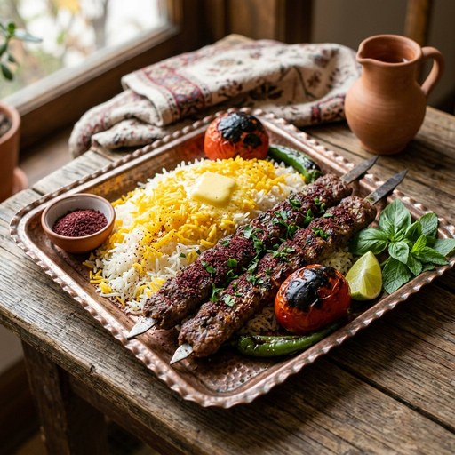
چلوکباب کوبیده
دو سیخ کوبیده گوشت تازه، برنج ایرانی، گوجه کبابی، کره، سالاد فصل و ماست.
-
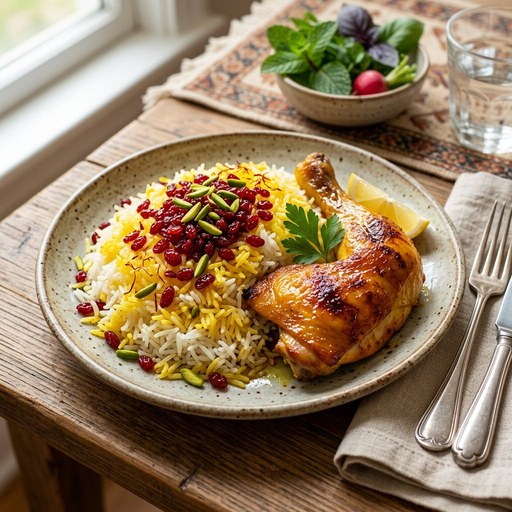
زرشکپلو با مرغ
ران مرغ زعفرانی، برنج ایرانی با زرشک و خلال پسته، سالاد شیرازی و ماست.
-
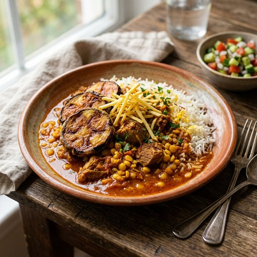
قیمه بادمجان با برنج ایرانی
خورش لپه و گوشت با بادمجان سرخشده، برنج ایرانی، ماست و ترشی خانگی.
-
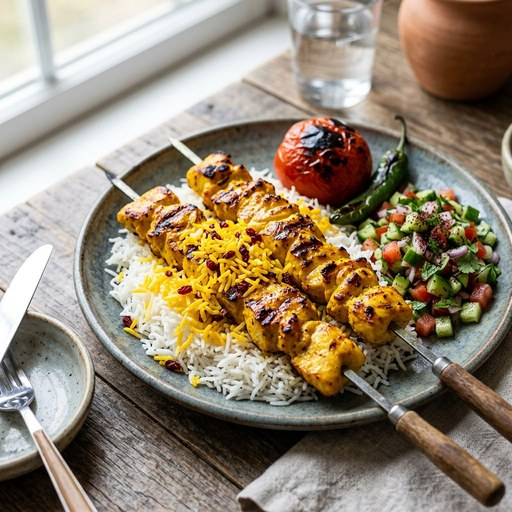
چلوجوجه زعفرانی (پرس رژیمی)
جوجه بیاستخوان مزهدارشده، کره زعفرانی، گوجه کبابی و سبزیجات بخارپز.

-
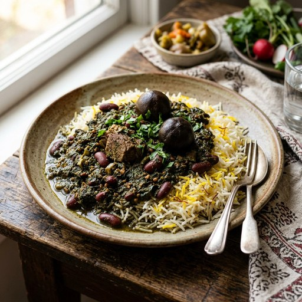
قورمهسبزی با برنج
خورش قورمهسبزی با گوشت و لوبیا قرمز، برنج ایرانی، ترشی و ماست.
-
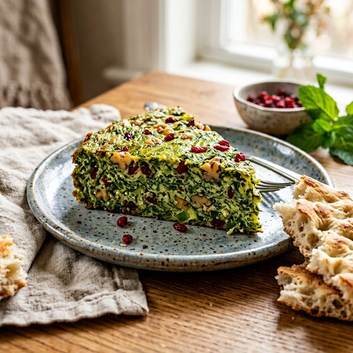
کوکو سبزی با نان سنگک
کوکو سبزی خانگی، نان سنگک تازه، ماست چکیده و سبزیجات تازه.
-
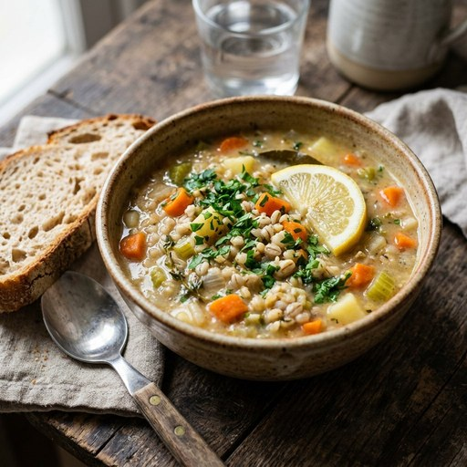
سوپ جو و سبزیجات
سوپ گرم خانگی با نان و پنیر؛ سبک و مناسب وعده شب شیفتهای کاری.
-
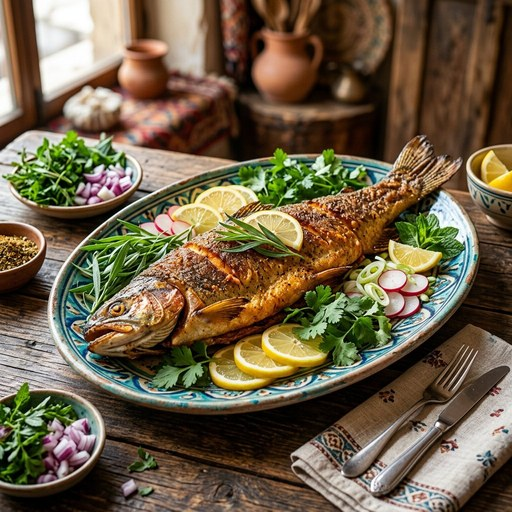
ماهی قزلآلای سرخشده
فیله ماهی تازه، برنج ایرانی، سبزیجات بخارپز و سالاد؛ روزهای مشخص هفته.

-
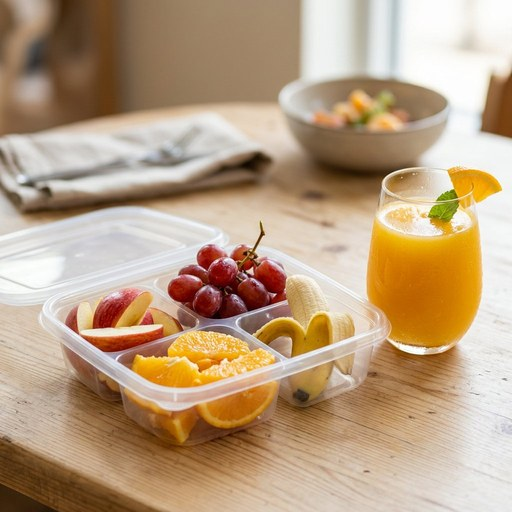
بسته میوه فصل و آبمیوه
میوه شسته و بستهبندیشده بهداشتی همراه با آبمیوه طبیعی یا آب معدنی.
-
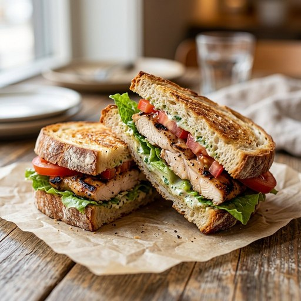
ساندویچ مرغ گریل (سرو گرم)
نان تازه، فیله مرغ گریلشده، سبزیجات تازه و سس خانگی؛ سرو گرم.
-
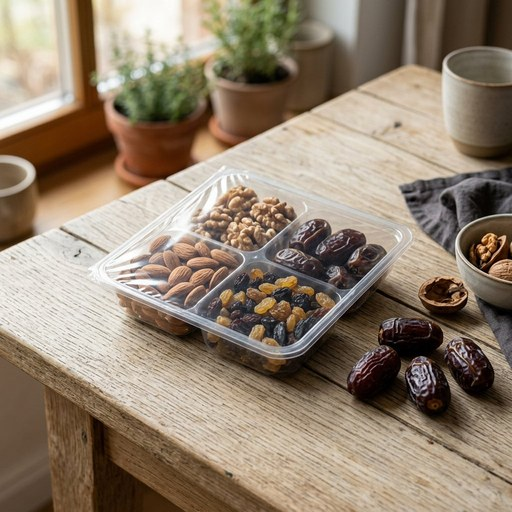
بسته خشک خط تولید
شکلات، بیسکویت و نوشیدنی بستهبندیشده؛ مناسب مصرف در خط تولید.
-
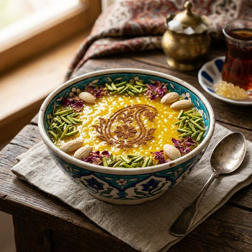
دسر تازه روز
ژله، حلوا یا کیک خانگی در بستهبندی استاندارد بهداشتی؛ تهیه روزانه.
نگاهی به آشپزخانه، غذا و فرآیند توزیع
بخشی از فضای عملیاتی تأمین غذای سازمانی؛ از طبخ در آشپزخانه بهداشتی تا تحویل وعدهها در محل شما


فرم درخواست مشاوره و عقد قرارداد
مشخصات مجموعه خود را ثبت کنید؛ کارشناس تأمین غذای سازمانی حداکثر تا ۲ ساعت کاری با شما تماس میگیرد و پیشنهاد اولیه را ارائه میدهد.
پرسشهای مدیران کارخانهها و واحدهای رفاهی
اگر پاسخ پرسش شما در این بخش نبود، کارشناسان ما آماده پاسخگویی تلفنی و واتساپی هستند
حداقل تعداد پرس برای انعقاد قرارداد چقدر است؟
معمولاً از ۵۰ پرس به بالا؛ برای مجموعههای کوچکتر نیز با توجه به فاصله محل توزیع و تعداد وعدهها، امکان تعریف قرارداد یا پرسهای ترکیبی وجود دارد. کارشناس ما پس از بازدید، دقیقترین برآورد را ارائه میکند.
آیا منو قابل تغییر است؟
بله؛ منوی هفتگی و فصلی است و بر اساس سلیقه پرسنل، بودجه شما و شرایط تولید قابل بازبینی است. آیتمهای غیرمحبوب حذف یا جایگزین میشوند و میتوانید گزینههای رژیمی، گیاهی یا کمنمک را به منو اضافه کنید.
غذای سازمانی جزو حقوق و دستمزد محسوب میشود؟
طبق قانون کار، غذای ارائهشده به پرسنل جزو مزایای غیرنقدی محسوب میشود و شرایط و آثار بیمهای و مالیاتی خاص خود را دارد. در قرارداد، نحوه محاسبه و مستندسازی وعدهها مشخص میشود و توصیه میکنیم پیش از امضا با مشاور مالی و بیمهای مجموعه خود نیز هماهنگ کنید.
زمان توزیع وعدهها چگونه تنظیم میشود؟
طبق شیفتهای کاری شما؛ برنامه توزیع در قرارداد تعیین میشود و برای شیفتهای شب، تعطیلات و روزهای پیک تولید نیز قابل تنظیم است. تغییرات موقت برنامه با هماهنگی قبلی و در کوتاهترین زمان اعمال میشود.
امروز قرارداد تأمین غذای پرسنل خود را نهایی کنید
یک تماس کافی است؛ بازدید کارشناسی، ارائه منوی نمونه و پیشنهاد قیمت شفاف را به عهده ما بگذارید. غذای گرم، بهداشتی و باکیفیت را در محل شما توزیع میکنیم.
پیشنهاد قیمت و بازدید محل توزیع کاملاً رایگان است • پوشش استان قزوین و شهرکهای صنعتی